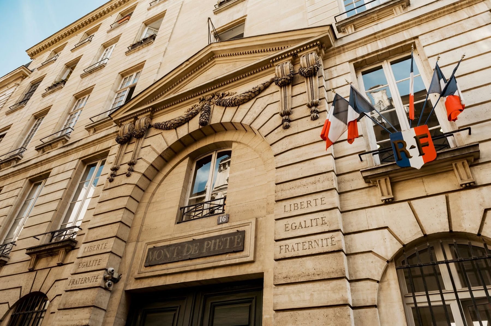

Le Crédit Municipal de Paris
L'établissement où j'effectue mon alternance de technicien support, au sein de la DSI.

L'établissement
Le Crédit Municipal de Paris est un établissement public de crédit et d'aide sociale, fondé en 1637. Ses activités comprennent le prêt sur gage, des ventes aux enchères, le microcrédit personnel, l'accompagnement social, ainsi que l'expertise et la conservation d'objets.
Mon rôle
Je travaille au centre de service de la DSI : point d'entrée des demandes des utilisateurs, traitement des incidents de niveaux 1 et 2, qualification et escalade vers les équipes spécialisées. Le support et l'administration sont deux équipes distinctes, dans un contexte bancaire où la sécurité et la traçabilité sont strictes.
Les enjeux numériques
Support du parc
Maintenance et suivi des postes et des périphériques.
Gestion des incidents
Ticketing, priorisation et traçabilité avec GLPI.
Déploiement
Applications, mises à jour et migrations de postes.
Sécurité et conformité
RGPD, sauvegardes, correctifs et antivirus.
Documentation
Procédures et passation pour garantir la continuité.